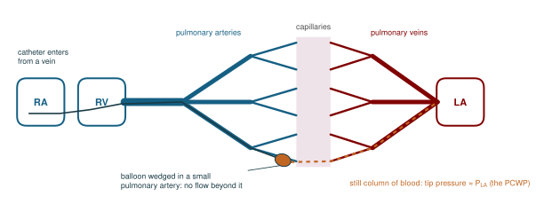
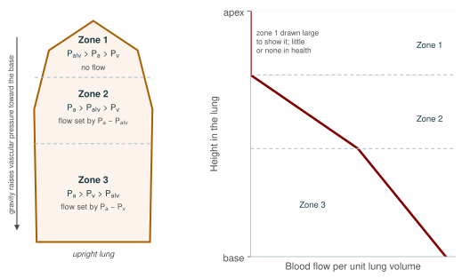
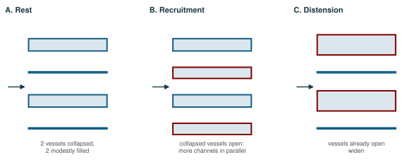
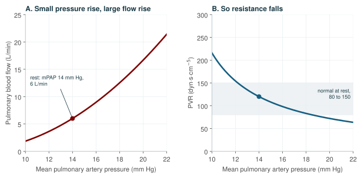
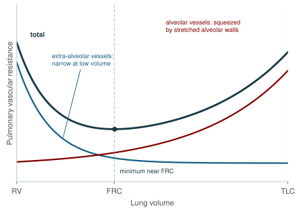
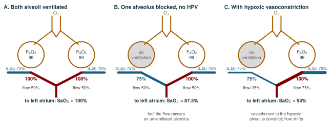
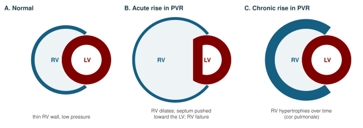

18 Pulmonary Circulation
A low-pressure, low-resistance circuit for the whole cardiac output
- Describe the two blood supplies to the lung.
- Explain why the pulmonary circulation runs at much lower pressures than the systemic circulation.
- Explain how it keeps those pressures low: recruitment and distension, the effect of lung volume, and hypoxic pulmonary vasoconstriction.
- Calculate pulmonary vascular resistance from mPAP, PCWP and cardiac output, and say why PCWP estimates left atrial pressure.
- Describe the West zones of flow by the order of arterial, alveolar and venous pressure.
- Compare the effects of acute and chronic increases in PVR on the right ventricle.
Names, dates and the exact values in figure captions are context, not things to memorize.
All of the cardiac output passes through the lungs. The right ventricle pumps the same 5 to 6 L/min as the left, through a circuit in series with the systemic circulation, yet it does so at about one sixth of the pressure. This lecture, taught in the cardiovascular block, asks why the pulmonary circulation is built for low pressure and how it stays that way when flow rises. The pulmonary block returns to the same vessels from the gas-exchange side in Ventilation and Perfusion, which covers what blood flow distribution and hypoxic vasoconstriction do to V/Q matching and arterial blood gases.
18.1 Two blood supplies
The lung has two circulations:
| Bronchial circulation | Pulmonary circulation | |
|---|---|---|
| Source | Bronchial arteries, from the aorta | Pulmonary artery, from the right ventricle |
| Flow | About 2% of cardiac output | Virtually the entire cardiac output |
| Pressure | Systemic | Low (pulmonary) |
| Supplies | The non-gas-exchanging parts of the lung: airways and supporting tissue | The alveolar capillaries |
The bronchial circulation is part of the systemic circulation. It feeds the lung’s own tissue, the way the coronary arteries feed the heart. Some bronchial venous blood drains into the pulmonary veins and so mixes, unoxygenated, with blood leaving the lungs; the V/Q chapter counts it as part of the normal small shunt.
The pulmonary circulation’s principal role is to expose blood to air. The pulmonary arteries branch alongside the airways into a capillary network that wraps the alveoli in an enormous, thin surface. The pulmonary circulation also has other jobs:
- it delivers substrates to the lung tissue;
- it activates and inactivates circulating signaling molecules (neurohormonal activation);
- it filters the blood, catching small clots before they can reach the systemic arteries;
- it serves as a blood reservoir for the left heart, so the left ventricle can keep filling for a few beats if right ventricular output falls.
18.2 A low-pressure circuit
The pulmonary and systemic circulations carry the same flow, about 6 L/min in the lecture’s example. Systemic arterial pressure is about 120/80 mm Hg. Pulmonary arterial pressure is about 20/10 mm Hg, with a mean of about 14.
Low pressure suits the lung’s job in three ways:
- It prevents pulmonary edema. Pulmonary capillary walls are thin so that gas can cross them quickly. At systemic pressures, the Starling forces (from Microcirculation and Local Control) would push fluid out of these capillaries into the interstitium and the alveoli, and fluid in the alveoli blocks gas exchange.
- It aids gas exchange. Thin-walled, low-pressure vessels can spread into a large, thin exchange surface.
- It facilitates forward flow into the left heart. The right ventricle only has to generate a low pressure to pump the whole cardiac output, so it can be a thin-walled pump that fills at a low right atrial pressure. A low Pra keeps the driving pressure for venous return high (VR = (Pms − Pra)/RVR, from Control of Cardiac Output).
18.2.1 Pulmonary vascular resistance
The same Ohm’s law that gives systemic vascular resistance gives pulmonary vascular resistance. For the systemic circulation, SVR = (MAP − CVP)/CO: the pressure drop from the aorta to the right atrium, divided by flow, in mm Hg·min/L. For the lungs, the pressure drop runs from the pulmonary artery to the left atrium:
\[\text{PVR} = \frac{\text{mPAP} - \text{PCWP}}{\text{CO}} \times 80\]
mPAP is the mean pulmonary artery pressure, the equivalent of MAP. PCWP, the pulmonary capillary wedge pressure, stands in for left atrial pressure, the outflow pressure, just as CVP does for the systemic circuit. Multiplying mm Hg·min/L by 80 converts the result to the units clinicians use, dyn·s·cm−5. Normal PVR at rest is 80 to 150 dyn·s·cm−5.
With the lecture’s resting values (mPAP 14 mm Hg, PCWP 5 mm Hg, CO 6 L/min):
\[\text{PVR} = \frac{14 - 5}{6} \times 80 = 120 \ \text{dyn·s·cm}^{-5}\]
The same flow passes through both circuits, but the pressure drop across the lungs is about 9 mm Hg, against roughly 90 mm Hg across the systemic circulation, so PVR is far lower than SVR. You need to know that SVR is much higher than PVR, not the exact ratio, and you do not need to memorize the factor of 80.
18.2.2 Measuring the wedge pressure
Left atrial pressure is hard to measure directly, so it is estimated with a pulmonary artery catheter. A thin catheter with a small balloon near its tip is passed through a vein into the right atrium, through the right ventricle and out into the pulmonary artery. When the balloon is inflated, the flowing blood carries it forward until it wedges in a small branch (Figure 18.1). Nothing flows beyond the wedged balloon, so the blood ahead of it forms a still column that connects through the capillaries and veins to the left atrium. With no flow there is no pressure drop along that column, and the pressure at the catheter tip approximates left atrial pressure. Pressures can be recorded in each chamber as the catheter passes through.

A high PCWP means a high left atrial pressure, and that pressure is passed back to the pulmonary capillaries. Their hydrostatic pressure rises, filtration rises, and fluid enters the interstitium and then the alveoli: pulmonary edema, as when a failing left ventricle fills at a high LVEDP (Microcirculation and Local Control has the Starling forces).
18.3 How PVR is regulated
Most of what changes PVR is passive: gravity, the pressure inside the vessels, and the volume of the lung around them. One active mechanism, hypoxic vasoconstriction, matters a great deal.
18.3.1 Gravity and the West zones
The pulmonary vessels are flexible, and their pressures are low enough that gravity matters. In an upright person, the column of blood adds pressure toward the base of the lung and subtracts it toward the apex. Vessels at the base are more distended, and blood flow per alveolus rises from the apex toward the base.
Alveolar pressure, by contrast, is about the same everywhere in the lung. Comparing the pressure in the pulmonary arteries (Pa), in the alveoli (Palv) and in the pulmonary veins (Pv) gives three zones of flow, named for West (Figure 18.2). The slides write alveolar pressure as PA; this book uses Palv, as in the pulmonary chapters, to keep it apart from Pa.
- Zone 1: Palv > Pa > Pv. Alveolar pressure exceeds the pressure in the capillaries and squeezes them shut. The region is ventilated but not perfused: dead space. Zone 1 is typically not present in health. It appears when vascular pressures fall or alveolar pressure rises (Ventilation and Perfusion).
- Zone 2: Pa > Palv > Pv. Roughly the upper third of the upright lung. The capillaries are open at their arterial end but squeezed at their venous end, so flow is set by Pa − Palv, not by the arterial-venous difference. The capillaries act as a Starling resistor: a collapsible tube whose flow depends on the pressure outside it. These vessels are the flexible reserve of the lung. A higher Pa opens more of them, and higher alveolar pressure squeezes them.
- Zone 3: Pa > Pv > Palv. The lower lung. Capillaries are open along their whole length, flow is set by Pa − Pv, and this zone has the greatest blood flow.
Use the zone numbers for the order of the three pressures. When you describe regions of the normal upright lung, the apex and the base are the clearer words, because in health the apex still has some blood flow. The Ventilation and Perfusion chapter follows what the zones do to V/Q and gas exchange.

18.3.2 Passive regulation: recruitment and distension
When cardiac output rises, in exercise for example, pulmonary artery pressure rises only a little, so PVR must fall. Two passive mechanisms lower it (Figure 18.3):
- Recruitment. At rest some capillaries, mostly in the upper lung, are collapsed or barely open. A small rise in pulmonary arterial pressure opens them. Each newly opened vessel is another resistance in parallel, so total resistance falls.
- Distension. Vessels that are already open widen as pressure inside them rises, and by Poiseuille’s law a small increase in radius lowers resistance a lot.
The course emphasis is on recruitment over distension: when flow rises, the lung mainly opens more vessels rather than over-stretching the ones already open. More open capillaries also means more surface for gas exchange.

The result is that in health a small increase in pulmonary arterial pressure produces a large increase in blood flow, and resistance falls as pressure rises (Figure 18.4). The lecture’s table for a healthy young man shows it:
| Rest | Exercise | |
|---|---|---|
| Pulmonary artery pressure (mm Hg) | 20/10 | 30/11 |
| Mean pulmonary artery pressure (mm Hg) | 14 | 20 |
| Pulmonary capillary wedge pressure (mm Hg) | 5 | 10 |
| Cardiac output (L/min) | 6 | 16 |
| PVR (dyn·s·cm−5) | 120 | 50 |
Cardiac output nearly triples while mean pulmonary artery pressure rises by 6 mm Hg, and PVR falls to less than half. The reserve is not unlimited. Once most vessels are open, further rises in flow need larger rises in pressure. At rest, a mean pulmonary artery pressure above about 20 mm Hg is pulmonary hypertension.

18.3.3 Lung volume
Lung volume also changes PVR, and it acts on two kinds of vessel in opposite directions (Figure 18.5):
- Alveolar vessels are the capillaries in the alveolar walls. As the lung inflates, the alveoli enlarge and their walls stretch, and the capillaries running in those walls are stretched thin and compressed. Their resistance rises with lung volume and is highest at TLC.
- Extra-alveolar vessels are the larger arteries and veins that run through the lung tissue outside the alveolar walls. As the lung inflates, pleural pressure becomes more negative and the surrounding lung tissue pulls outward on their walls, so they are pulled open. Their resistance falls with lung volume and is highest at low volumes, near RV, where they narrow.
Total PVR is the sum of the two in series. It is lowest near FRC, the volume at which a person spends most of the breathing cycle, and rises toward both RV and TLC: a U-shaped curve.

The peer-educator notes say that inhalation “increases alveolar volume and pressure” and compresses the capillaries. During a normal inspiration alveolar pressure falls slightly below atmospheric (the Respiratory Statics chapter explains why). What compresses the alveolar vessels is the stretch of the enlarging alveolar walls around them, not a rise in alveolar pressure. The prediction is the same: alveolar vessel resistance rises as the lung inflates.
18.3.4 Active regulation: hypoxic pulmonary vasoconstriction
The one strong active control of the pulmonary vessels is O2. When the alveolar PO2 in a region of the lung falls, the small pulmonary arteries supplying that region constrict. This is hypoxic pulmonary vasoconstriction (HPV). It is the opposite of what systemic arterioles do, which dilate when their tissue is hypoxic. HPV is local: the pulmonary vascular smooth muscle responds to the low O2 around it, without nerves or circulating signals.
The lecture shows why it helps with a model of two alveoli, each receiving half the cardiac output, with mixed venous blood 75% saturated (Figure 18.6):
- Both alveoli ventilated. Blood leaving each alveolus is fully saturated, and the blood reaching the left atrium is about 100% saturated.
- One alveolus blocked, as by pneumonia or a mucus plug, with no HPV. Half the flow passes an alveolus with no fresh gas and leaves it still 75% saturated. Mixed with the 100% blood from the good alveolus, the blood reaching the left atrium is (75 + 100)/2 = 87.5% saturated.
- With HPV. The vessels to the hypoxic alveolus constrict and flow shifts to the ventilated one. If the blocked unit now gets a quarter of the flow, the mix is 0.25 × 75 + 0.75 × 100 ≈ 94%.
HPV matches perfusion to ventilation (“V/Q matching”) and protects arterial saturation when the hypoxic region is limited. The Ventilation and Perfusion chapter covers how it shapes shunt and PaO2.

When the whole lung is hypoxic, HPV cannot redirect blood anywhere better. Arteries constrict throughout the lung, and the effect is a rise in total PVR.
18.4 Two diseases that raise PVR
Emphysema (in chronic obstructive pulmonary disease). Large regions of the lung are poorly ventilated, so alveolar hypoxia is widespread and chronic. HPV acts across the whole lung and raises PVR, and the destruction of alveolar walls also removes capillaries from the bed, leaving fewer vessels in parallel.
Pulmonary embolism. A clot carried from the systemic veins lodges in the pulmonary arteries and blocks them. The pulmonary circulation is in series with the rest of the circulation, so the whole cardiac output must still pass through the lungs. Blocked vessels are removed from the parallel network, and the remaining vessels have to carry the whole cardiac output, so PVR rises abruptly. The ventilated alveoli beyond the clot get no flow, which adds dead space (the V/Q chapter).
The peer-educator notes describe pulmonary embolism as “acute hypoxia due to block in blood vessels from blood clot → increase PVR to compensate.” The rise in PVR is not a compensation. The clot itself obstructs the vessels, which raises PVR, mainly mechanically, and the alveoli downstream are ventilated but not perfused. Hypoxemia, when it occurs, is a result of the embolism and the redistribution of flow, not the cause of the rise in PVR.
18.5 Why PVR matters: the right ventricle
The right ventricle is built for the low-pressure pulmonary circuit: a thin-walled, crescent-shaped chamber wrapped around the left ventricle. A rise in PVR is a rise in its afterload, and how it copes depends on how fast the rise happens (Figure 18.7).
Acute increase in PVR, as with a large pulmonary embolism. The thin right ventricle cannot suddenly generate a much higher pressure. It dilates and is overloaded: it fails as a pump, its stroke volume falls, and its filling pressure (Pra, measured as CVP) rises. The dilated right ventricle also pushes the septum toward the left ventricle.
Chronic increase in PVR, as in emphysema with chronic hypoxia. Given months or years, the right ventricle adapts the way any muscle does to a sustained load: it hypertrophies and learns to live at higher pressures. Over time, though, it can still dilate and fail. Right ventricular enlargement and failure caused by lung disease is cor pulmonale.

The lecture’s closing point ties this back to the two pumps in series: the left ventricle can only pump what the right ventricle gives it. If the right ventricle cannot push the cardiac output through a high PVR, left ventricular filling falls and systemic cardiac output falls with it, however healthy the left ventricle is. Patients with severe elevations of PVR can have “right-heart-limited” circulations. The Control of Cardiac Output chapter shows the same coupling from the left side, where a failing left ventricle raises left atrial and pulmonary pressures and loads the right ventricle.
Know that PVR is low and SVR much higher, how to calculate PVR from mPAP, PCWP and CO, and the three things that keep PVR low or change it: recruitment (and distension) as flow rises, lung volume (lowest PVR near FRC), and hypoxic vasoconstriction (regional for V/Q matching, global as a cause of high PVR). Then be able to say what an acute and a chronic rise in PVR do to the right ventricle.
18.6 Check your understanding
A large clot blocks the artery to the left lower lobe. The alveolar capillaries there lose their flow. Which blood supply keeps the bronchial walls of that lobe alive, and why does it still have flow?
Answer
The bronchial circulation. Bronchial arteries come off the aorta and run at systemic pressure, independent of the pulmonary artery, and they supply the airways and supporting tissue, the non-gas-exchanging parts of the lung.
A person takes a maximal breath to TLC and holds it, then later breathes out all the way to RV. How does PVR at each volume compare with PVR at FRC, and which vessels are responsible?
Answer
PVR is higher at both. At TLC the alveolar vessels in the stretched alveolar walls are squeezed and lengthened, so their resistance is high. At RV the extra-alveolar vessels are no longer pulled open by the surrounding tissue and narrow, so their resistance is high. The sum is lowest near FRC.
A climber goes to high altitude, where every alveolus has a low PO2. What happens to her PVR and right ventricle over the first two weeks, and how would the right ventricle look if she lived there for years?
Answer
Hypoxic vasoconstriction acts throughout the lung, because every region is hypoxic, so total PVR rises. Over the first weeks the right ventricle faces a higher afterload and must generate a higher pulmonary artery pressure. Over years of sustained high PVR it adapts the way muscle does to a chronic load: its wall hypertrophies. That is the chronic pattern, unlike the dilation and failure of an acute rise in PVR.
A patient has had one lung removed. At rest her pulmonary artery pressure is nearly normal. Predict what happens to her mean pulmonary artery pressure during exercise compared with a person with two lungs, and explain why.
Answer
It rises more. With one lung, the whole cardiac output already passes through half the vascular bed, so many of the vessels that would normally be recruited are already open. During exercise there is little reserve left to recruit, so the rise in flow needs a larger rise in pressure.
Why does a sudden large pulmonary embolism raise CVP and lower systemic arterial pressure, even though the left ventricle is healthy?
Answer
PVR rises abruptly. The thin right ventricle cannot generate the higher pressure, so it dilates and fails: its stroke volume falls and its filling pressure (CVP) rises. Less blood reaches the left heart, and the left ventricle can only pump what the right ventricle delivers, so systemic cardiac output and arterial pressure fall.
Why does the pressure at the tip of a wedged pulmonary artery catheter approximate left atrial pressure, and not pulmonary artery pressure?
Answer
The inflated balloon stops flow in the branch it occludes. With no flow, there is no pressure drop along the still column of blood between the catheter tip and the left atrium, so the tip reads the pressure at the far end of that column, left atrial pressure. Pulmonary artery pressure is upstream of the balloon and is cut off from the tip.
18.7 Key equations
| Equation | Use |
|---|---|
| PVR = (mPAP − PCWP)/CO × 80 | Pulmonary vascular resistance in dyn·s·cm−5; normal 80 to 150 |
| SVR = (MAP − CVP)/CO × 80 | The systemic version in the same units, about 1,200 dyn·s·cm−5 with the lecture’s resting values (90/6 × 80); without the × 80, SVR is about 15 and PVR 1.5 mm Hg·min/L |
18.8 Sources
This chapter follows the Pulmonary Circulation lecture for MEDC 30504 (2025 deck, taught in the cardiovascular block) and draws on the peer-educator notes and the course’s 2018 notes, corrected and updated. All figures were drawn for this book.